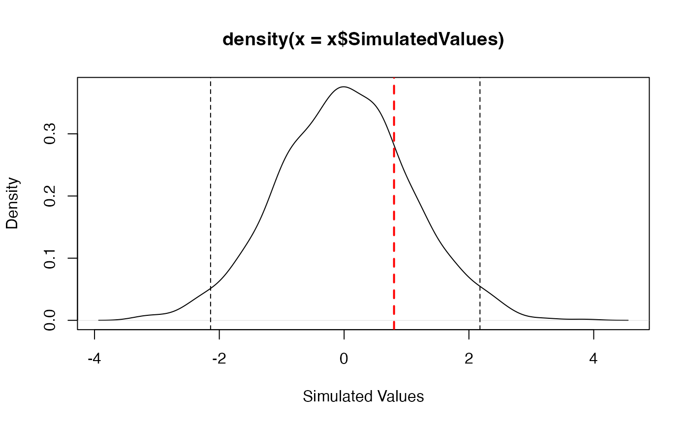
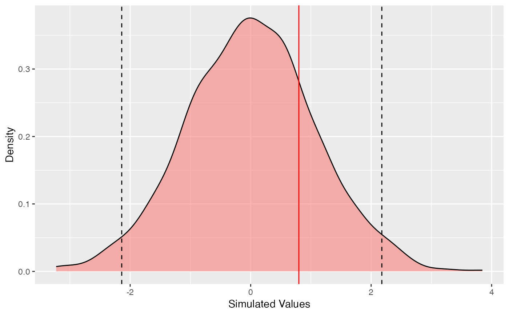

SimTest class
SimTest.RdMethods for objects of type "SimTest", used to test a value against its distribution under a simulated null hypothesis.
Usage
as.SimTest(RealValue, SimulatedValues)
is.SimTest(x)
# S3 method for class 'SimTest'
autoplot(object, Quantiles = c(0.025, 0.975), ...,
colValue = "red", colQuantiles = "black", ltyQuantiles = 2,
main = NULL, xlab = "Simulated Values", ylab = "Density")
# S3 method for class 'SimTest'
plot(x, Quantiles = c(0.025, 0.975), ...,
colValue = "red", lwdValue = 2, ltyValue = 2,
colQuantiles = "black", lwdQuantiles = 1, ltyQuantiles = 2,
main = NULL, xlab = "Simulated Values", ylab = "Density")
# S3 method for class 'SimTest'
summary(object, Quantiles = c(0.025, 0.975), ...)Arguments
- x
An object to be tested or plotted.
- object
An object.
- RealValue
A numeric Value (the actual one).
- SimulatedValues
A numeric vector containing the simulated values.
- Quantiles
A vector containing the quantiles of interest.
- colValue
The color of the line representing the real value on the plot.
- lwdValue
The width of the line representing the real value on the plot.
- ltyValue
The line type of the line representing the real value on the plot.
- colQuantiles
The color of the lines representing the quantiles on the plot.
- lwdQuantiles
The width of the lines representing the quantiles on the plot.
- ltyQuantiles
The line type of the lines representing the quantiles on the plot.
- main
The main title of the plot. if
NULL(by default), there is no title.- xlab
The X axis label.
- ylab
The Y axis label.
- ...
Additional arguments to be passed to the generic methods.
Details
Simulated values should be obtained by simulation. The actual value is compared to simulated quantiles. SimTest objects can be plotted and summarized.
Value
SimTest objects are lists containing:
- RealValue
The value to test.
- SimulatedValues
A vector of simulated values, whose quantiles will be used for the test.
is.SimTest returns TRUE if the object is of class SimTest.
summary.SimTest returns a summary of the object, including the empirical quantile of the real value in the simulated distributon.
Examples
# Set the value to test
Real <- 0.8
# Is it a realization of a Gaussian distribution?
Sims <- rnorm(1000)
# Make a Simtest object
st <- as.SimTest(Real, Sims)
summary(st)
#> Real value: 0.8
#> Quantile in the simulated distribution: 0.782
#> Quantiles of simulations:
#> 2.50% : -2.140066
#> 97.50% : 2.177345
#> Mean simulated value: 0.006135806
# Plot
plot(st)

# ggplot
autoplot(st)
